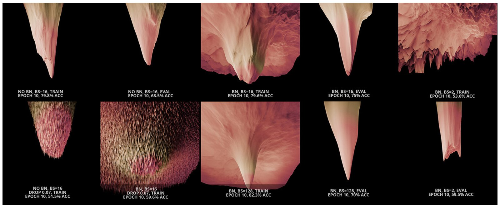
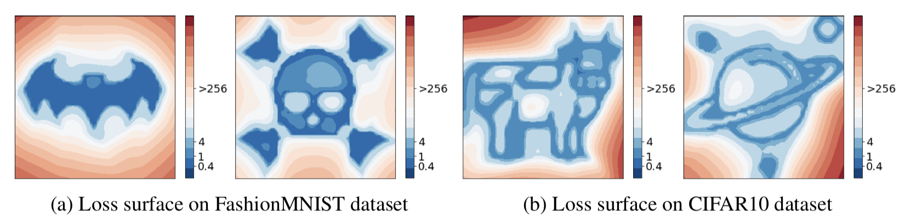
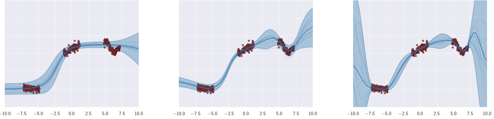
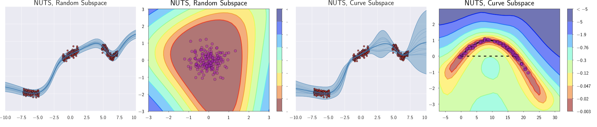
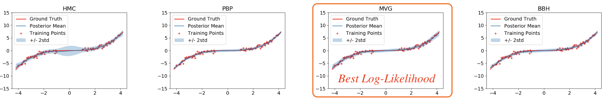
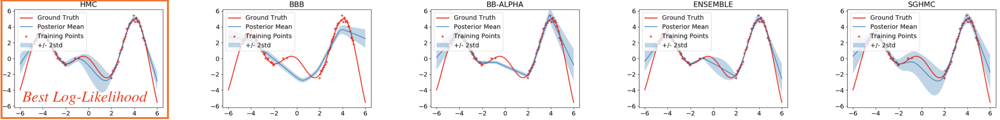
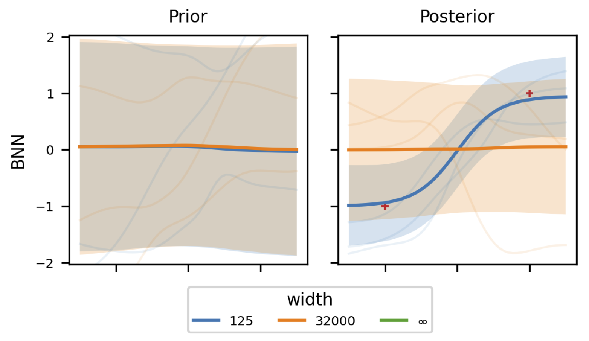
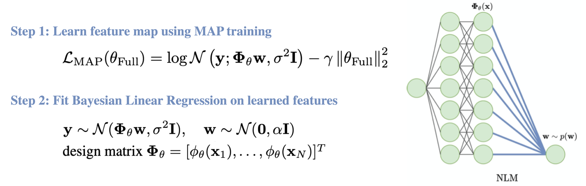
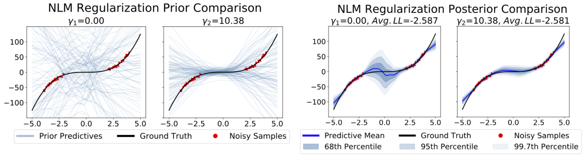
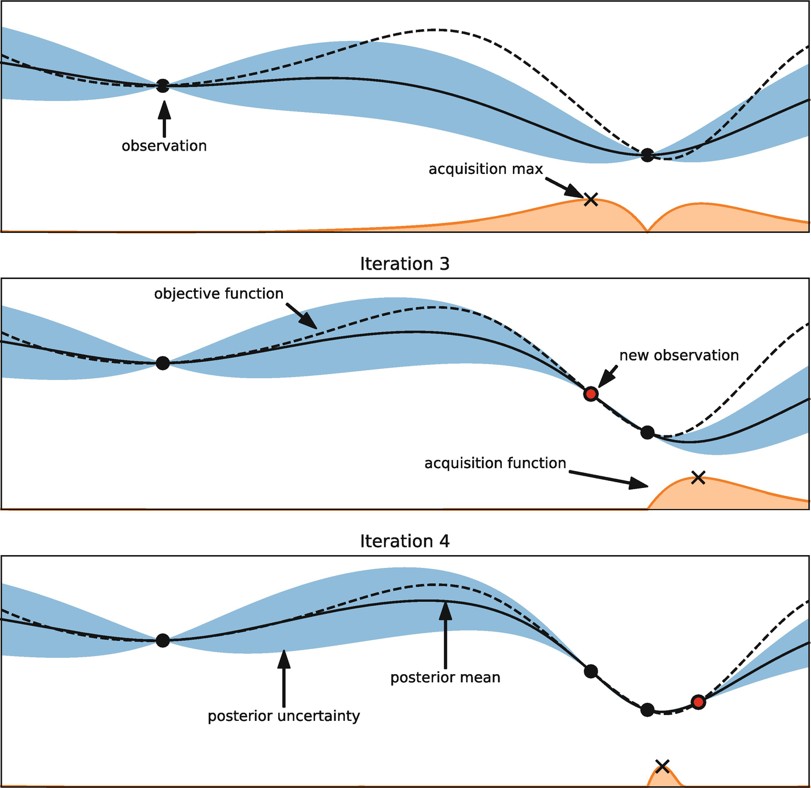

24. Variational Inference in Context#
This chapter is adapted from AM207 (Harvard, Fall 2021). Watch the recorded lecture.
In this chapter
How to Evaluate Approximate Inference
How to Improve Approximate Inference
Why do I care?
24.1. How to Evaluate Approximate Inference#
How Good is Your Variational Approximation of the True Posterior?#
Question: Why is it hard to check that the variational posterior is a good approximation of the true posterior?
You can’t simply visualize the true posterior, since it’s 1) high dimensional, 2) intractable to sample form.
Question: What if we computed the KL-divergence between the true posterior and the variational approximation?
“Practical Posterior Error Bounds from Variational Objectives”: Unfortunately, even when the KL-divergence between \(q\) and \(p\) is effectively zero, the difference between the means and variances of \(q\) and \(p\) can be arbitrarily large. That is, a small KL-divergence doesn’t capture our intuition about what it means for two distributions to be similar.
Alternative Posterior Evaluation Metrics#
In “Yes, But Did It Work: Evaluating Variational Inference”, the authors proposes two alternative posterior evaluation metrics:
1. The Pareto Smoothed Importance Sampling Diagnostic: If the variational approximation \(q\) is very different than \(p\), then the importance sampling MC estimate of \(\mathbb{E}_{p(\theta|\text{Data})}\left[ f(\theta) \right]\),
will have very high variance, due to the fact that the importance weights \(\frac{p(\theta|\text{Data})}{q(\theta)}\) will be very heterogeneous. Thus, methods of smoothing the weights, like Pareto Smoothed Importance Sampling (PSIS) will have poor performance. The efficacy of PSIS can be used as a diagnostic tool for testing if \(q\) is similar to \(p\).
2. The Variational Simulation-Based Calibration (VSBC) Diagnostic: Given a Bayesian model \(p(y, \theta) = p(y|\theta) p(\theta)\), if your variational inference procedure is good at approximating the posterior \(p(\theta|y)\) then it should do well for most sets of data that is generated from the model \(p(y, \theta)\).
We generate \(M\) sets of synthetic data from \(p(y, \theta)\). For each set of the data we approximate the posterior \(q_m(\theta)\). We then perform a calibration test on each variational approximation. This will reveal if your variational inference procedure is biased - produces approximation that are consistently flawed in some specific way.
24.2. How to Improve Approximate Inference#
Your Variational Approximation Sucks, Can You Fix It?#
The current research on improving variational inference can be categorize by which design choice each work tries to improve:
1. Choice of Divergence: In Lab 5, you explored the draw-backs of fitting an approximate posterior \(q\) to the true posterior \(p\) using KL-divergence. There are a huge number of works that explore performing variational inference using other types of divergences, for example:
\(\quad\) a. “Black-box \(\alpha\)-divergence Minimization”
\(\quad\) b. “Stein Variational Gradient Descent”
2. Choice of Variational Family: In the Chapter 1 problem set, you’ve seen that even for a simple Bayesian linear regression model, the model parameters were correlated in the posterior. In Lab 8, you’ve seen that minimizing the KL-divergence to fit an isotropic Gaussian means that you can only capture one mode in the posterior. There are a huge number of works that explore using different types of variational families:
\(\quad\) a. “Variational Inference with Normalizing Flows”
\(\quad\) b. “The Variational Gaussian Process”
3. Choice of Optimization Procedure: Even if your divergence measure and variational family are well-chosen, the optimization objective can still be non-convex! This means that your optimization procedure might return a \(q\) that is a only local-optimum. There are a large number of works that address how to jump out of local optima using SGD and some works that specifically address the optimization challenges of variational inference:
\(\quad\) a. “Proximity Variational Inference”
Are There Any Good Properties of Variational Approximations that We Are Sure About?#
In “Frequentist Consistency of Variational Bayes”, the authors prove that under certain assumptions on \(p(\theta)\) and \(p(y|\theta)\):
as the number of observation increases, the variational approximation converges (in Total Variation distance) to the \(q\) that minimizes the KL-divergence to a normal distribution centered at the ground truth parameters \(\theta_{\text{true}}\) that generated the data.
the mean of the variational approximation is consistent and asymptotically normal.
Unfortunately, the assumptions required by the theorems do not hold for neural network likelihood models.
Why is Inference for Neural Networks Hard?#
Research on the likelihoods (and hence posteriors) of neural networks are beginning to give us ways of visualizing these high-dimensional functions using low-dimensional (3D) projections. Loss Landscapes represents some of the latest efforts at visualization:


It’s Weirder Than You Can Imagine#
In “Loss Landscape Sightseeing with Multi-Point Optimization”, the authors show that neural network likelihoods (and thus posteriors) are so complicated that you can find a 2-D projection that can create any pattern you want:


The lesson: take every low-dimensional visualization with a grain of salt (i.e. it far from accurately represents the entire landscape).
24.3. But why do I care?#
Evaluation of Variational Approximation for Real Down-stream Tasks#
In practice, you may only care about the quality of your posterior approximation in so far as it affects model performance on your down-stream task. So what do we want from our machine learning or statistical models, especially when they are used in safety, or fairness critical applications (e.g. personalized medicine, health-care resource allocation, criminal justice systems)?
Most of us in the community agree that we want models that 1) makes accurate predictions 2) gives realistic estimates of its predictive uncertainty. So that the model can be held-accountable by humans in the system. There are a number of subcommunities in ML that focus on studying the social impact of machine learning models as well as how to design models whose negative impact can be mitigated.
a. “Concrete Problems in AI Safety”
b. “Predict Responsibly: Improving Fairness and Accuracy by Learning to Defer”
Predictiveness of the Variational Approximate Posterior#
We can check the predictiveness of our variational approximation of the posterior by sampling models from the posterior and then making predictions using these models by sampling from the likelihood. We then check that these predictions align well with observed data by:
Visualization: visualizing the posterior predictive against the observed data. This is generally impossible for high dimensional data.
Log Marginal Data Likelihood: we compute the expected value of the log likelihood of the test data under our approximate posterior. Log likelihood is only useful for comparing two different models, given a single model it is hard to say if a log likelihood value is “good enough”.
Expected Mean Square Error and Accuracy: we compute the expected MSE (for regression) or accuracy (for classification) on test data under our approximate posterior. While these metric frames model quality in concrete task related terms, they are each misleading when the data contains outliers or imbalanced classes.
Quality of Variational Approximate Posterior Predictive Uncertainty#
We’ve argued in this book that good predictive uncertainty must involve an accurate assessment of both epistemic and aleatoric uncertainty. Since each type of uncertainty requires a different risk-management action in the down-stream task.


Unfortunately, there isn’t a single good statistical metric for assessing the quality of the uncertainty of a model. “Good” epistemic uncertainty is especially hard to quantify. Rather than looking for statistical tests of uncertainty, some in the ML community advocate for assessing model uncertainty with respect to a set of benchmark down-stream tasks: Bayesian Deep Learning Benchmarks
Does a Poor Posterior Approximation Imply a Poor Posterior Predictive?#
You’ve seen in the Chapter 18 problem set that even with an HMC sampler that is far from converged, you were able to produce posterior predictives that aligned well with the data and had good epistemic and aleatoric uncertainty. In fact, a number of works are showing that by capturing a little piece (if it is the right piece) of the true posterior of a BNN, you are able to capture most of the variation you want in the posterior predictive.
In “Subspace Inference for Bayesian Deep Learning”, the authors provide toy examples where one obtains a posterior predictive distribution with good epistemic and aleatoric uncertainty by reducing a high dimensional parameter space to 2-dimensions and performing inference in the 2-dimensional subspace:


24.4. New Developments in Deep Bayes#
What’s Wrong with Posterior Approximations for BNNs#
(joint work with Jiayu Yao, Soumya Ghosh, Finale Doshi-Velez)
The motivation: Frequently, we introduce a new approximate inference method for BNNs based on our intuition of what properties of the true posterior are important to include in our approximate posterior. We then measure the log-likelihood of our learned model on test data.
The idea: We evaluate the ability of a number of state-of-the-art approximate inference methods for BNN on synthetic data that can be visualized to see if various custom approximations of the posterior translates to desirable posterior predictives.
We also test if the commonly used evaluation metrics, like test log-likelihood, can distinguish high quality posterior predictives from poor quality ones.
From: Quality of Uncertainty Quantification for Bayesian Neural Network Inference
What Did We Learn?#
Take-away: Metric like test log-likelihood measures how well the approximate posterior predictive aligns with the data, not how well it approximate the true posterior predictive.


Take-away: Training with data gaps and evaluating test likelihood can only catch problems if the true function is complex in these gaps.


Take-away: Inference methods that specialize in approximating specific properties in the posterior do not necessarily produce desirable posterior predictives.
What’s Wrong with the Predictions from Mean-Field Variational Posteriors of BNNs?#
(joint work with Beau Coker, Finale Doshi-Velez)
The problem with mean-field VI for BNNs isn’t just with the variance. In Wide Mean-Field Variational Bayesian Neural Networks Ignore the Data. we show that as the network width becomes wider, the posterior predictive mean ignores the data completely and learns a constant (flat) function!


The fact that the posterior predictive mean of mean-field variational posteriors of wide BNNs underfit the data has been observed empirically in Overpruning in Variational Bayesian Neural Networks.
Relationships Between Deep Ensembles and Bayesian Neural Networks#
Although we’ve been thinking about ensembles and Bayesian models as belonging to a dichotomy (frequentist vs Bayesian statistics), in papers like Conservative Uncertainty Estimation By Fitting Prior Networks and Repulsive Deep Ensembles are Bayesian, we see that ensembles and Bayesian models have a deep relationship.
Take-away: In fact, some ensembles can be interpreted as collections of samples from a corresponding Bayesian model!
Alternative Models for Uncertainty Quantification#
Although mean-field VI is touted as a fast way of performing inference on BNNs, they are still hard to scale to truly large networks. For this reason, alternative deep Bayesian models have been gaining popularity. Neural Linear Models is a model that learns deterministic weights for an NN except for the last layer, where we place priors and perform exact Bayesian inference:


From: Learned Uncertainty-Aware (LUNA) Bases for Bayesian Regression using Multi-Headed Auxiliary Networks
Predictive Uncertainties of Alternative Deep Bayesian Models May Not be Better#
(joint work with Sujay Thakur, Cooper Lorsung, Yaniv Yacoby, Finale Doshi-Velez)
In Learned Uncertainty-Aware (LUNA) Bases for Bayesian Regression using Multi-Headed Auxiliary Networks, we show that the posterior predictive uncertainty of NLMs are not what we might want. The problem has a lot to do with how we typically train neural networks.


What Uncertainties Do We Need in Deep Learning?#
More and more folks in the Deep Bayes community is coming to the conclusion that the quality of uncertainty estimation can only be assessed in reference to a specific down-stream task, e.g. active learning, continual learning, Bayesian optimization, out of distribution detection, learning to defer (rejection learning), model interpretation etc.


Take-away: There is no universal definition of or metric for “good” uncertainty - “good” uncertainty is uncertainty that is useful for the task.
Take-away: Uncertainty estimation that is good for one task might be bad for another!
24.5. Summary#
What did we observe in the Chapter 22 problem set? We setup a BNN with 1 hidden layer and 5 hidden nodes.
Did your HMC converge? Do you feel confident that you can get it to converge?
Did the posterior samples give you desirable predictive uncertainty?
Did your BBVI optimize the ELBO fully? How do you know that you’ve optimized your ELBO fully?
Did the variational posterior give you desirable predictive uncertainty?
When the network is large, do you believe that either HMC or mean-field Gaussian VI will give you a good approximation of the posterior?
Do we necessarily need a good approximation of the posterior to get desirable uncertainty?
The Training Wheels are Off! When doing machine learning in the wild, no one knows the “right answer”, your metrics are not absolute, the only thing you can rely on is your intuition (which is you internalizing the theory you’ve learned as well as your hands-on experience working with these models).
How can we know that our HMC has no bugs in it?
How can we know that our BBVI has no bugs in it?
How can we know that we’ve fully optimized anything (e.g. the ELBO) through gradient descent?
What are the impediments to BBVI optimizing fully? I.e. what do we tune to improve performance?
What are the impediments to HMC mixing? I.e. what do we tune to improve performance?
What this book is not: This book is not a one-stop for all the tools you need to be a fluent practitioner of in-demand state-of-the art machine learning. It’s normal that:
You still don’t feel like you’re comfortable implementing all the models from scratch and deploying it in real-life conditions. You should not be comfortable now, but you will be with practice in the future!
You don’t remember everything from the book, and that as time passes, you seem to forget more. You’ll forget many if not most facts, but when you re-learn these facts, understanding will come more easily and with more depth.
What this book is: This book is a map or atlas and paints a broad landscape of modern-day probabilistic machine learning. Using the structure of this book you can better organize and process new ML knowledge.
This book is a foundation for you to build on; future courses in ML will reference these models, techniques and concepts:
Reinforcement learning (Harvard)
Causal inference (Harvard)
ML for Healthcare (MIT)
Neural Processing (Harvard)
Special Topics in ML (Harvard)
Interpretable ML (Harvard)
AI for Social Good (Harvard)
24.6. New Developments in Deep Bayes#
What’s Wrong with Posterior Approximations for BNNs#
(joint work with Jiayu Yao, Soumya Ghosh, Finale Doshi-Velez)
The motivation: Frequently, we introduce a new approximate inference method for BNNs based on our intuition of what properties of the true posterior are important to include in our approximate posterior. We then measure the log-likelihood of our learned model on test data.
The idea: We evaluate the ability of a number of state-of-the-art approximate inference methods for BNN on synthetic data that can be visualized to see if various custom approximations of the posterior translates to desirable posterior predictives.
We also test if the commonly used evaluation metrics, like test log-likelihood, can distinguish high quality posterior predictives from poor quality ones.
From: Quality of Uncertainty Quantification for Bayesian Neural Network Inference
What Did We Learn?#
Take-away: Metric like test log-likelihood measures how well the approximate posterior predictive aligns with the data, not how well it approximate the true posterior predictive.
Take-away: Training with data gaps and evaluating test likelihood can only catch problems if the true function is complex in these gaps.
Take-away: Inference methods that specialize in approximating specific properties in the posterior do not necessarily produce desirable posterior predictives.
What’s Wrong with the Predictions from Mean-Field Variational Posteriors of BNNs?#
(joint work with Beau Coker, Finale Doshi-Velez)
The problem with mean-field VI for BNNs isn’t just with the variance. In Wide Mean-Field Variational Bayesian Neural Networks Ignore the Data. we show that as the network width becomes wider, the posterior predictive mean ignores the data completely and learns a constant (flat) function!
The fact that the posterior predictive mean of mean-field variational posteriors of wide BNNs underfit the data has been observed empirically in Overpruning in Variational Bayesian Neural Networks.
Relationships Between Deep Ensembles and Bayesian Neural Networks#
Although we’ve been thinking about ensembles and Bayesian models as belonging to a dichotomy (frequentist vs Bayesian statistics), in papers like Conservative Uncertainty Estimation By Fitting Prior Networks and Repulsive Deep Ensembles are Bayesian, we see that ensembles and Bayesian models have a deep relationship.
Take-away: In fact, some ensembles can be interpreted as collections of samples from a corresponding Bayesian model!
Alternative Models for Uncertainty Quantification#
Although mean-field VI is touted as a fast way of performing inference on BNNs, they are still hard to scale to truly large networks. For this reason, alternative deep Bayesian models have been gaining popularity. Neural Linear Models is a model that learns deterministic weights for an NN except for the last layer, where we place priors and perform exact Bayesian inference:
From: Learned Uncertainty-Aware (LUNA) Bases for Bayesian Regression using Multi-Headed Auxiliary Networks
Predictive Uncertainties of Alternative Deep Bayesian Models May Not be Better#
(joint work with Sujay Thakur, Cooper Lorsung, Yaniv Yacoby, Finale Doshi-Velez)
In Learned Uncertainty-Aware (LUNA) Bases for Bayesian Regression using Multi-Headed Auxiliary Networks, we show that the posterior predictive uncertainty of NLMs are not what we might want. The problem has a lot to do with how we typically train neural networks.
What Uncertainties Do We Need in Deep Learning?#
More and more folks in the Deep Bayes community is coming to the conclusion that the quality of uncertainty estimation can only be assessed in reference to a specific down-stream task, e.g. active learning, continual learning, Bayesian optimization, out of distribution detection, learning to defer (rejection learning), model interpretation etc.
Take-away: There is no universal definition of or metric for “good” uncertainty - “good” uncertainty is uncertainty that is useful for the task.
Take-away: Uncertainty estimation that is good for one task might be bad for another!
24.7. Further Reading#
Approximate Inference for Deep Bayesian Models
(Using an Alternate Divergence Measure for VI) Black-Box α-Divergence Minimization
(Using an Alternate Variational Family) Variational Inference with Normalizing Flows
(Approximating the Posterior in a Subspace) Subspace Inference for Bayesian Deep Learning
Evaluating Approximate Inference for Deep Bayesian Models
(Why are BNN Posteriors So Difficult?) Visualizing the Loss Landscape of Neural Nets
(How to Evaluate the Epistemic Uncertainty of Approximate Posteriors of BNNs) Quality of Uncertainty Quantification for Bayesian Neural Network Inference
(Hard Limitations of Mean-Field VI for BNNs) On the Expressiveness of Approximate Inference in Bayesian Neural Networks
Alternate Models for Deep Bayesian Networks
(Neural Linear Models) Learned Uncertainty-Aware (LUNA) Bases for Bayesian
(Manifold Gaussian Processes) Manifold Gaussian Processes for Regression